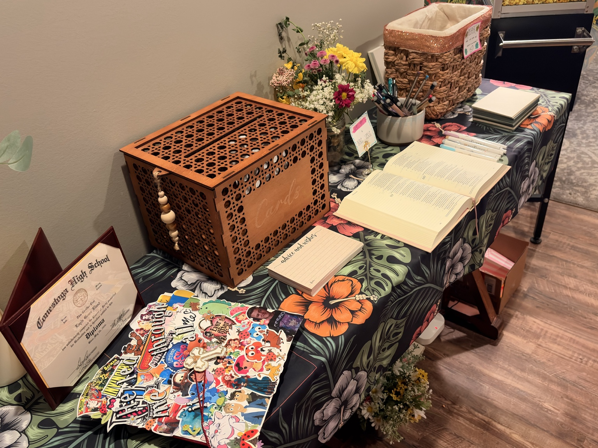
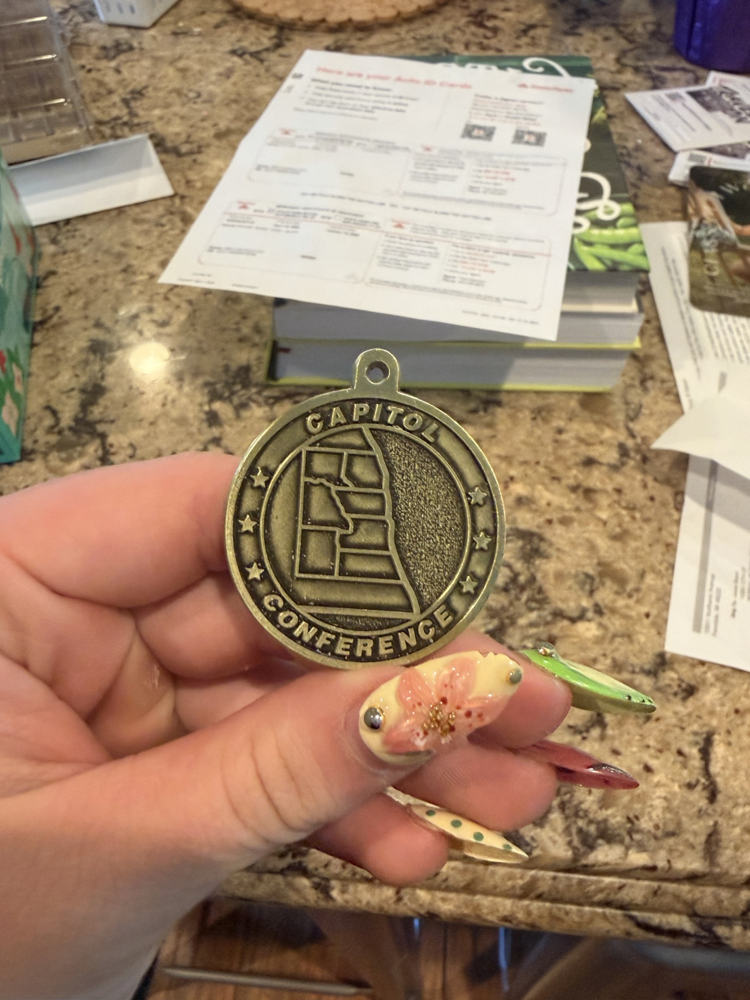
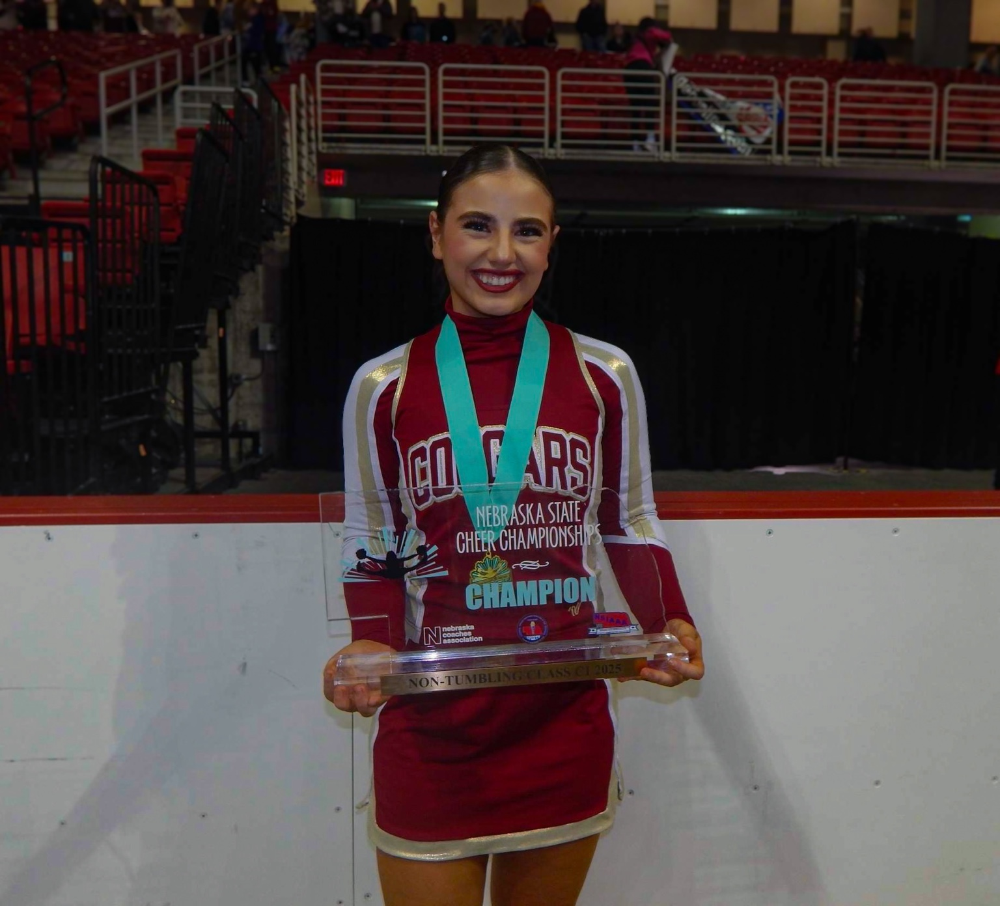

Layla's Story

Layla Bland is an artistic, strong, and driven young woman whose life has been shaped by creativity, athletics, family, faith, and exposure to different cultures. She was born in Doha, Qatar, and moved to Papillion, Nebraska, when she was around four years old.
Experiencing two different cultures at a young age helped Layla develop a broad perspective on the world. Growing up with two older sisters also helped shape her mature outlook on life. After attending several schools during her childhood, she began attending Conestoga in third grade and eventually graduated from there.
Creativity and Personal Interests
Creativity has always been an important part of Layla's personality. She enjoys painting, drawing, fashion, and other forms of artistic expression. In her free time, she also enjoys cooking, baking, reading, browsing Pinterest, and watching her favorite movies and television shows.
Faith is another important part of Layla's life. She values growing in her relationship with Jesus and sharing her beliefs with others.
Athletic Accomplishments
Fitness plays a major role in Layla's life. She goes to the gym four to five times a week and has an impressive athletic background.
During high school, Layla became a two-time state champion cheerleader. She also placed in the top three in powerlifting competitions and qualified for Nationals throughout her high school career.
Future Goals
Layla plans to graduate from college and eventually open her own women-only gym. Her goal is to create a supportive environment where women can focus on improving their health and fitness while feeling comfortable and safe.
One of Layla's biggest inspirations is her mother, whose ambition and hard work helped her rise from poverty to a CEO position before starting her own business.
Through creativity, faith, strength, and determination, Layla continues working toward the future she envisions for herself.
Major Accomplishments

High School Graduation
Layla graduated from Conestoga after attending the school since third grade.

Art Recognition
Layla earned recognition as Best Artist for Conestoga at the Capitol Conference.

State Champion Cheerleader
Layla became a two-time state champion cheerleader, showing discipline, teamwork, and determination.